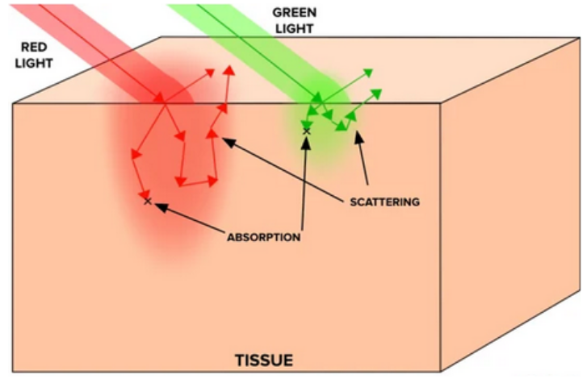
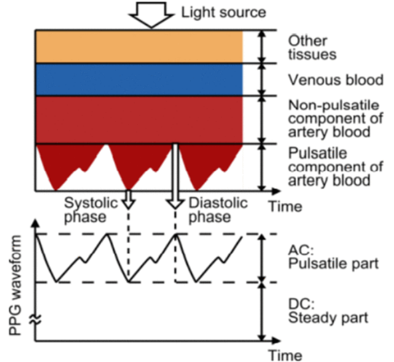
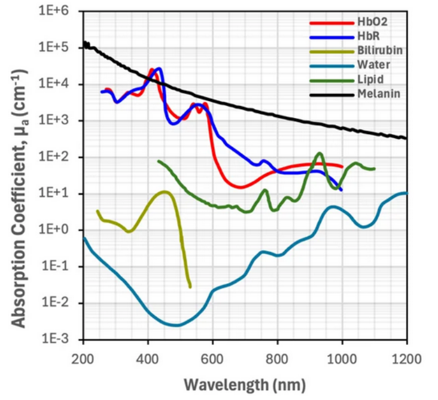
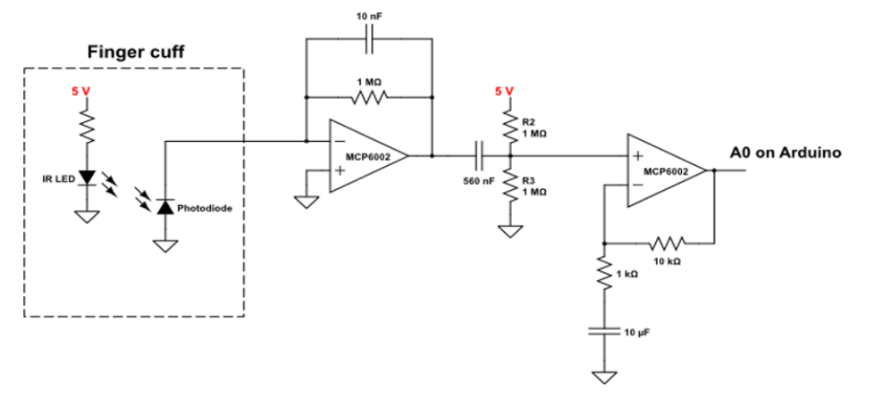
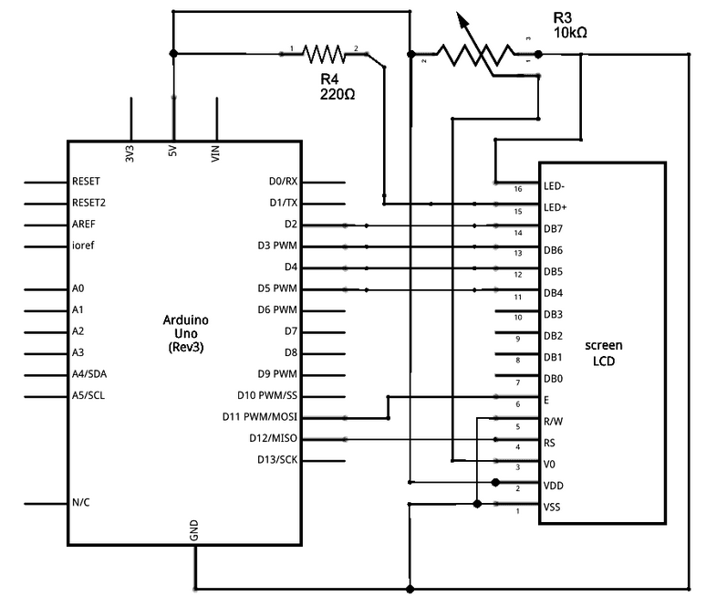
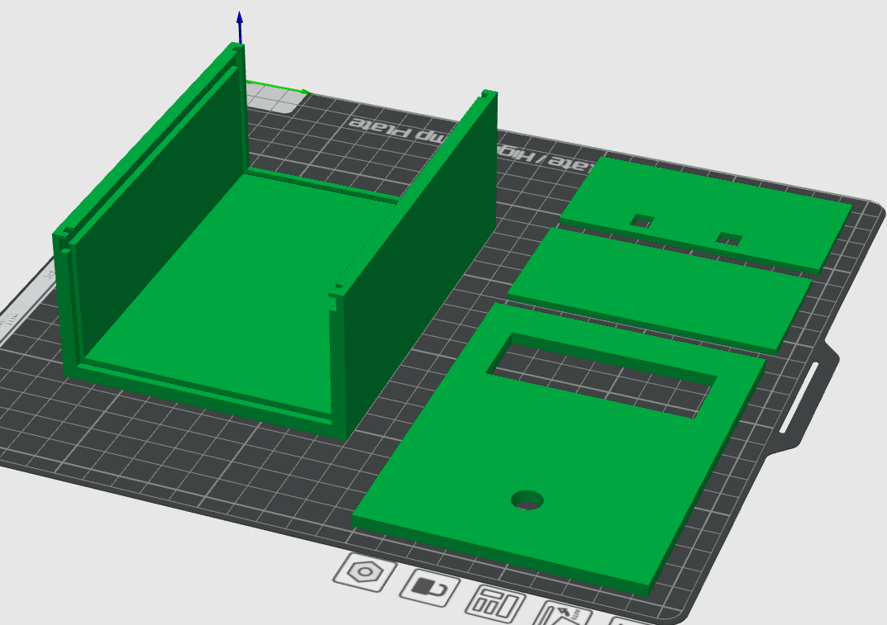

A pulseometer is a wearable device to measure a user's real-time heart rate.
Pulseometers are commonplace for use in both medical settings and at-home patient care.
Commercial pulseometers measure heart rate (bpm) and peripheral blood oxygen saturation (SpO2).
These measurements are useful for everyday health monitoring, but are particularly
important for patients with conditions affecting the lungs or heart - like COPD, COVID-19,
or heart disease.
This Final Report gives the underlying theory for this device and outlines
our final design, with the goal that it could be marketed as a
commercially viable finger clip pulseometer. It incorporates real-time heart rate
monitoring with a user-friendly design and visual display. Using the principles of photoplethysmography,
we are able to detect the subtle flushing that occurs when blood flows through capillary arteries near
the surface of the skin. Then, using various signal processing methods, we turn this information into
a heart rate. This device does not measure oxygen saturation as that was outside the scope of this course,
but could be considered in future iterations of this project.
Economic and Market Analysis
The global market for wearable healthcare devices is projected to increase by $75.98 billion
by 2030, representing a 67.76% increase over its 2025 value. Over this forecast period, the
market is expected to grow at a compound annual growth rate (CAGR) of 10.9%. This shows the
demand for wearable healthcare devices will continue to grow. This market includes devices that
measure pulse, blood-oxygen levels, glucose, insulin, and more with the purpose of focusing on
this market because there isn’t an explicit pulsometer market, only a pulse oximeter market.
For the SWOT analysis, we have identified the following:
STRENGTH Our product only has one feature and so our focus is to have the pulse readings more accurate than other products
WEAKNESS Since we are using an arduino, the product will be more clunky to wear
OPPORTUNITY General health awareness amongst people is rising, making it more likely our product will sell
THREAT Most pulsometers on the market also function as an oximeter, making our product have less features than competitors
To better understand where our product would sit in the market, we looked at competitors that offer heart rate monitoring as part of their product. The smartwatch
category (Apple, Samsung, Fitbit) typically offers heart rate, blood oxygen, sleep tracking, and other fitness features at a price range of roughly $65 to $799. The
dedicated pulse oximeter category (Masimo, Medtronic, Wellue) offers heart rate and blood oxygen at a price range of roughly $20 to $700. Across all six competitors
we looked at, the average price range is approximately $148 to $522.
Looking at the bill of materials for our own product, the component cost is significantly lower than what is on the market. The IR LED is roughly $0.90, the
photodiode is $1.40, the resistors total $0.25, the capacitors total $0.21, the op-amps total $0.64, the microcontroller is between $5 and $15 depending on whether
we use the Arduino Uno or a smaller microcontroller, and the mini LCD is roughly $5. The total component cost is between $13.40 and $23.40. Even after accounting
for the 3D printed housing, assembly, and a reasonable markup, our product could be priced well below the competitor average while still maintaining margin. The
tradeoff is that our product currently only measures heart rate, not blood oxygen, and is bulkier than a smartwatch.
Methodology & Engineering Principles
Our pulseometer, like commercial products, is based on photoplethysmography (PPG). PPG is an optical
technique based on the Beer-Lambert law, and it can be used to measure physiologic information about a
patient. When a patient’s skin is illuminated with specific wavelengths of light, the absorbance fluctuates
in accordance with the flow of blood through that area of tissue. If one can measure this real-time absorbance,
it is possible to extract information about not only heart rate, but blood oxygen saturation, respiratory rate,
and even sleep quality.


Our project uses transmittance PPG, where the light source is positioned opposite
to the light collecting device, so the signal must travel through the appendage (fingertip)
as demonstrated in the figure. In order to pick up small absorbance changes in pulsatile artery blood,
we need to understand the optical properties of tissue and blood. Considering we are using transmittance
PPG, light must be able to travel through the fingertip without getting completely absorbed or scattered out.
Light scattering in tissue can be modeled with a power law relationship:
μs′ ∝ λ−b
μs′ = scattering coefficient [1/length]
λ = wavelength of light
b = scattering “strength” [dimensionless]
Depending on the tissue, b could be anywhere between 0.7-1.5. It is clear that as wavelength decreases,
scattering increases, and we see a similar trend for absorption. Absorption follows the Beer-Lambert law:
Re-arranging the expressions above we see that μa ∝ cε. However, in tissue samples this becomes
slightly more complicated, as the Beer-Lambert law assumes the presence of only one absorber. In skin and tissue there
are many absorbers, so we can express this with a sum:
μa ∝ Σi ci εi
Each of these absorbers has slightly different molar extinction coefficients (melanin and other chromophores
in the skin exhibit strong light absorption in the 200-500nm range, whereas water and lipids become more
significant past 800nm). Absorbance is not as simple as scattering, but in general molar extinction coefficients for
relevant organic molecules in the skin become stronger at lower wavelengths. Therefore if the goal is for light to travel
all the way through tissue, it is more helpful to use a higher wavelength of light. It must still be a wavelength that can
pick up on vascular activity; that is, it must be absorbed or scattered just enough so that we can detect a change when blood
flow is occurring.

Deoxygenated and oxygenated hemoglobin absorb some wavelengths of light equally (red-NIR), but some wavelengths differently,
and this contrast allows us to collect absorbance data. Infrared light (850-1000nm) is more absorbed by oxygenated hemoglobin,
while deoxygenated hemoglobin has stronger absorption of red light (650–750nm). In commercial devices, the difference between
these absorbance ranges allows one to measure blood oxygen saturation. However, for the purpose of this device we therefore
use infrared light, as it has enough penetration depth into the tissue to be detected with transmittance PPG while
also being sufficiently scattered / absorbed by oxygenated blood for us to detect it.
Circuit Schematics
Most current circuit design shown below:

This circuit is made up of four components. Going left to right, the first component is the finger cuff,
this is where the patient interacts with the device. The finger cuff is in the shape of a finger clip, with the
IR LED and the photodiode positioned on opposite sides of the finger. The photodiode converts light into electrical
current with a high sensitivity and linearity, which is helpful for the small signals we are working with. The second
component is the transimpedance amplifier (TIA). The current from the photodiode flows to the negative terminal of the
op-amp and through the gain-setting resistor. This creates a voltage at the output of the op-amp that is proportional
to the input current - the capacitor helps reduce noise. Next is a simple highpass filter; we are removing the DC baseline
signal that comes from the natural absorbance and scattering from the tissue. The last component is a non-inverting gain op-amp.
This amplifies the signal by a factor of R2/R1 (the ratio of the resistor in the feedback loop to the resistor connected to ground).
The capacitor in this stage blocks the DC signal that we added in the previous stage, amplifying only the AC signal that we care about.
The goal of this whole process is to isolate the signal we care about (absorbance from oxygenated hemoglobin)
and amplify it while removing background signal / noise. In this circuit there is already signal processing with
multiple built-in filters, but there is more signal processing that has to happen in arduino. In order to remove
background noise from the environment, we can use background subtracted signal. We blink the IR LED on and off (50-500Hz)
and measure the signal in the on versus off state. Subtracting these two values will give us a reading that is roughly
independent of the surrounding conditions - like ambient lighting or different placements of the device on the finger.
Furthermore, in order to give a heart rate in bpm, it is necessary to do real-time peak detection on the signal. This peak
detection becomes very hard with noisy signal, but assuming we can tune our filter appropriately, this peak detection can
be done with a simple cut off. If the signal is higher than some predetermined baseline and the signal goes from increasing
to decreasing (instantaneous derivative = 0) then we can mark a peak. Time average between peaks gives the user real-time bpm.
We also added an LCD screen to read the BPM from the pulseometer and portray a heart or skull depending on the pulseometer reading.
The screen circuitry is shown below.

Final Code
First we have the window, which is a rolling buffer that stores the last 4 seconds of sensor readings (80 samples) so the program always has a
fresh chunk of recent data to analyze.
Then we have the peak detection. The way it works is that every 2 seconds the program scans through all the samples in the
window and checks each one against three rules. The first rule is that the sample has to be higher than the samples directly
before and after it, meaning it sits at a local high point. The second rule is that the peak has to be at least 10 samples (half a second)
away from the previous accepted peak, which keeps a single heartbeat from being counted twice. The third rule is a prominence check,
which measures how far the peak stands above the nearby valleys and rejects anything that does not stand out enough to be a real beat.
If a peak passes all three rules it gets added to an array.
Once at least two peaks have been collected the program calculates the BPM. It does this by measuring
the spacing between each pair of consecutive peaks, then taking the median of those spacings rather
than the simple average so a single bad reading cannot throw the result off. That spacing gets converted
from samples into seconds, and from seconds into beats per minute.
The product also shows emoticons depending on what the machine sees, a heart if it has a valid BPM and a
skull if no pulse has been found for more than half a second. This is all done through an LCD screen
which also displays the current BPM number underneath the icon. An example of what a user may see is shown below.
There was a moment when creating the code that it ran in python and the arduino had a code that
took the data and sent it to a laptop. This was supposed to make it easier to conduct signal processing;
however when we decided we wanted to have the device stand alone, this meant reverting all the python code
back into arduino code to handle the processing. Another change within the code since the first edition, there
was initially a Savitzky-Golay filter that was removed. The filter was supposed to be a way to reduce any noise
so peak detection becomes easier; however the filter was filtering multiple peaks into one. This made the data
completely inaccurate, so we decided to abandon the filter. Besides that, the code has stayed relatively the same.
Final Design
Between the intermediate prototype and the MVP, the finger clip design itself was not changed - the clip from Mark II proved adequate, so the focus shifted to building a
proper housing for everything else. The main goal of this stage was to design a case that fit the MVP perfectly, holding the Arduino, the circuitry, and the LCD screen
together as one unit. With the casing in place, the device is now fully standalone: the user no longer needs a laptop to read the BPM, since the LCD screen mounted in
the case displays it directly.
To briefly describe the safety of our product; it is very safe. All wires and circuits are contained, it runs on low voltage, and LEDs do not overheat.
Overall there are no safety issues with our final product.

Performance Data
To benchmark the accuracy of our pulseometer, we compared its calculated heart rate readings against a commercial reference device under two conditions:
at rest and immediately after light exercise. Each test was run over a 100-second period with readings taken every 5 seconds, and the error
(Calculated − Real) was tracked at each timepoint. The mean absolute error (MAE) was used as our primary accuracy metric.
At rest: MAE = 8.9 bpm (real heart rate averaged ~72 bpm, giving roughly 12% error in percentage terms). After exercise: MAE = 12.3 bpm (real heart rate averaged ~85 bpm, giving roughly 14% error in percentage terms).
The error plot shows that performance degrades noticeably during and after exercise, with the after-exercise readings swinging further from zero
than the at-rest readings. The dominant source of this degradation appears to be grip and orientation of the finger inside the clip — when the finger
shifted even slightly, the optical path between the IR LED and photodiode changed enough to throw off the prominence-based peak detection. This is
consistent with the finding from the code development phase, where finger orientation (nail-side down with light contact) had a larger effect on
signal quality than any single circuit or software parameter.
In short, the device is reasonably accurate when the user is still and the finger is well-seated, but performance is entirely dependent on grip
and orientation. Improving consistency under movement is a clear next-step area, addressed in the Next Steps section below.
Challenges
Challenges in producing an effective and accurate pulseometer relate to understanding the
interaction of light with human skin tissue, small signals with a large amount of background noise,
and user interaction with the equipment.
The focus point for our device is the finger, yet even the composition of the finger is very complex
and tissue properties vary widely from person to person. In our device, light must travel through every skin layer
(epidermis, dermis, and hypodermis), then through muscle, fascia, nerve tissue, and other connective tissue. Our device
should be able to function regardless of skin color (as melanin content can change refractive behavior of light), fat content,
or muscle content. While the patient is using the device, it should still be able to function under differing conditions of
fingertip perspiration, slight finger movement, or changing external lighting conditions. We accounted for these differences
by using wavelengths of light that work regardless of skin absorbers (like melanin) and target the absorption spectra of oxygenated
blood. We accounted for friendly user design by using a finger clip that blocks out external light sources and grips tight
enough to not be affected by user movement, but not so tight that it cuts off blood flow.
A challenge we faced in CBE 3300A when creating a rudimentary pulsometer was making a small signal amplified and
removing background signal and noise. The flushing of the skin that we are trying to detect is very minor, and creating
a device to measure these slight changes could be likened to finding a needle in a haystack. There are many sources of
background signal and noise for PPG, but absorption from other tissues, background light, and user movement were the largest.
However, these factors generally do not change for an individual user while they are using the device, so it tends to result
in a baseline DC signal that we have to filter out. What is important is making sure the signal is able to stand out after we
remove everything else. We dealt with this by implementing new circuit design and signal processing techniques.
A specific challenge that emerged late in development was tuning the signal processing pipeline to the actual hardware behavior.
The Savitzky-Golay filter we initially used at 50 Hz was smearing peaks rather than cleaning them, and the prominence threshold
we picked early on was based on assumed signal levels that didn't match what the circuit was actually producing. Resolving this
required going back to raw, unfiltered data and rebuilding the pipeline parameter-by-parameter against measured values rather
than assumed ones.
Next Steps
The goal of this project is to create a commercially viable pulseometer, but in
order to do this faithfully we would need to include blood oximetry measurements.
To do this we would need a second LED of a lower
wavelength (in the visible red spectrum) and we would need to process that second signal
in real time, same as the IR signal. With a device using this dual-LED setup, we could
measure far more complex bodily functions, like sleep tracking and workout activity, similar
to products like a Fitbit or Apple Watch.
Another goal would be to improve the user experience. The circuit described above is bulky,
and therefore difficult to take on the go. If we could miniaturize this circuit on a printed circuit
board, and use a much smaller microcontroller, then we could embed the device entirely onto the finger
clip, and use bluetooth to communicate with a computer or a phone.
Finally, the performance data showed that grip and finger orientation were the dominant source of error,
especially after exercise. A future iteration should focus on mechanical refinements to the finger clip — such as
a contoured contact surface, a softer compliant gasket between the optical components and the skin, or an
orientation-detection step in firmware that warns the user when the finger is misaligned — to make the device
robust under realistic, non-ideal use conditions.
References
Abhigyan. "Introduction to the Savitzky-Golay Filter: A Comprehensive Guide Using Python."
Medium / Python Engineered, 2023.
https://medium.com/pythoneers/introduction-to-the-savitzky-golay-filter-a-comprehensive-guide-using-python-b2dd07a8e2ce.
Jacques, Steven L. "Optical Properties of Biological Tissues: A Review."
Physics in Medicine & Biology 58, no. 11 (2013): R37–R61.
https://doi.org/10.1088/0031-9155/58/11/R37.
Mancini, D. M., L. Bolinger, H. Li, K. Kendrick, B. Chance, and J. R. Wilson.
"Validation of Near-Infrared Spectroscopy in Humans."
Journal of Applied Physiology (1985) 77, no. 6 (1994): 2740–2747.
https://doi.org/10.1152/jappl.1994.77.6.2740.
Ryals, S., A. Chiang, S. Schutte-Rodin, et al.
"Photoplethysmography—New Applications for an Old Technology: A Sleep Technology Review."
Journal of Clinical Sleep Medicine 19, no. 1 (2023): 189–195.
https://doi.org/10.5664/jcsm.10300.
Scholkmann, Felix, and Martin Wolf.
"General Equation for the Differential Pathlength Factor of the Frontal Human Head Depending on Wavelength and Age."
Journal of Biomedical Optics 18, no. 10 (2013): 105004.
https://doi.org/10.1117/1.JBO.18.10.105004.